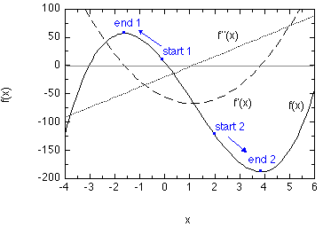

Newton-Raphson (NR) optimization
Many algorithms for geometry optimization are based on some variant of the
Newton-Raphson (NR) scheme. The latter represents a general method for finding
the extrema (minima or maxima) of a given function f(x) in an iterative manner.
For minima, the first derivative f'(x) must be zero and the second derivative
f''(x) must have a positive value, while for maxima f'(x) is again zero and the second
derivative f''(x) has a negative value. The recipe for finding, starting from a
point xn, the next point xn+1 in the iterative series
is:
xn+1 = xn - (f'(xn)/f''(xn))
It is clear from this recipe that the first and second derivatives
(or at least good approximations thereoff) are required in the process. As with
any iterative procedure, a convergence criterion must be selected at which the iterative
process can be considered to be converged. Typical choices include the gradient f'(xn),
the difference between the functional values of two consecutive iterations
df = f(xn+1) - f(xn), or the difference between the values
of x itself between two consecutive iterations dx = xn+1 - xn.
As an example the following function has been chosen:
f(x) = 3x3 - 10x2 -56x +5
The first and second derivatives of f(x) with respect to x are:
f'(x) = 9x2 -20x -56
f''(x) = 18x -20
In the range of -4 < x < 6, these functions behave as follows (Scheme 1):

As a first starting point we will choose x0 = 0.0. This point is
highlighted in Scheme 1 as start 1. The iterative procedure
takes four steps to converge to the point designated in Scheme 1 as
end 1 assuming a convergence criterion of dx = 0.001.
| iteration | xn | f(x) | f'(x) | f''(x) | dx
|
|---|
| 0 | 0.0 | +5.0 | -56.0 | -20.0 | -2.8
|
| 1 | -2.8 | +17.5440 | +70.560 | -70.40 | +1.0023
|
| 2 | -1.7977 | +55.9249 | +9.0395 | -52.3586 | +0.1726
|
| 3 | -1.6251 | +56.7207 | +0.2683 | -49.2510 | -0.0054
|
| 4 | -1.6197 | +56.7214 | +0.0049 | -49.1546 | -0.0001
|
In this case the NR algorithm locates a functional maximum at x=-1.6197. The maximum is designated
through a large negative second derivative f''(x). The largest step dx is made at the very beginning
due to the fairly small value of f''(x) at the starting point. This is actually one of the weaknesses
of the NR procedure and the variants used in molecular geometry optimization therefore impose
a limit on the maximum step size of each NR step (trust radius). Choosing a starting point somewhat
closer to the functional minimum with x0 = 2.0 (start 2)
gives a different result:
| iteration | xn | f(x) | f'(x) | f''(x) | dx
|
|---|
| 0 | +2.0 | -123.0 | -60.0 | +16.0 | +3.75
|
| 1 | +5.750 | -77.2969 | +70.560 | +83.50 | -1.5157
|
| 2 | +4.2343 | -183.6597 | +9.0395 | +56.2174 | -0.3678
|
| 3 | +3.8665 | -187.6118 | +0.2683 | +49.5967 | -0.0246
|
| 4 | +3.8419 | -187.6268 | +0.0049 | +49.1551 | -0.0001
|
In this second case the NR procedure leads to a local minimum at x=+3.8419 (end 2).
The second derivative at this point is strongly positive indicating a true minimum. As in the first example
the first step is by far the largest and "overshoots" the minimum by a good margin. But convergence is achieved
within four cycles. Function f(x) has, of course, been chosen such that an analytical solution can also be
found in a straight forward manner for the condition that f'(x)=0 at x= +3.8418 and -1.6196. We can thus
conclude that the NR procedure locates the maxima/minima in few iterations with good accuracy.
Additional
consideration should, however, be given to the following points: Comparison of the first and second example
shows that the final result of the NR procedure strongly depends on the starting point.
Locating a minimum or a maximum using NR-based methods thus requires a good starting point.
A further point that makes application of the NR algorithm less appealing is the need of the
second derivatives f''(x). These are expensive to compute for large molecular systems and
a variety of methods exist to deal with this point.
last changes: 16.10.2004, HZ
questions & comments to: zipse@cup.uni-muenchen.de